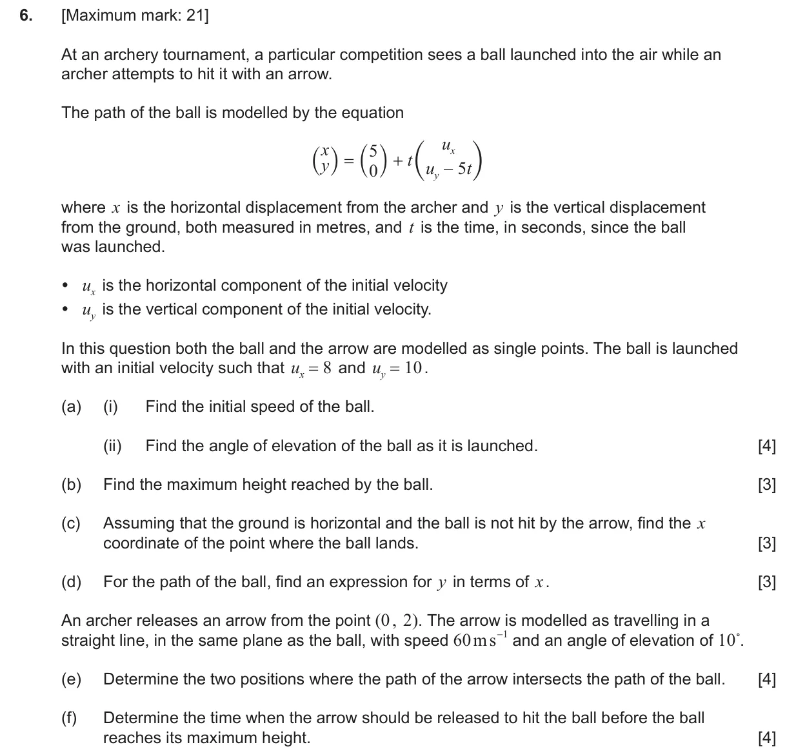
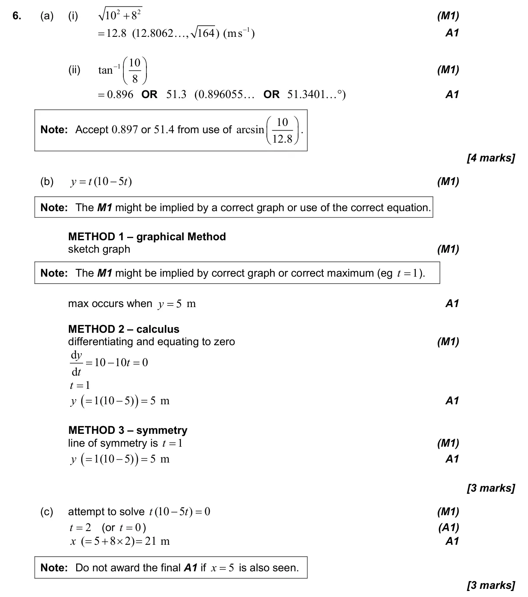
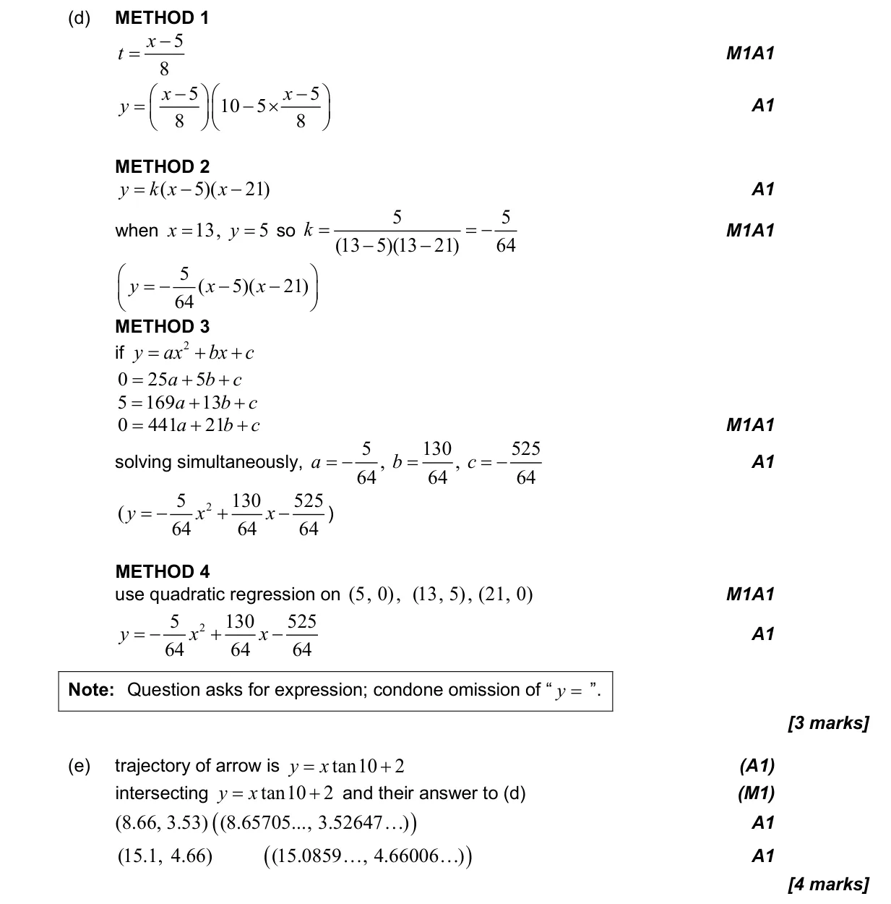
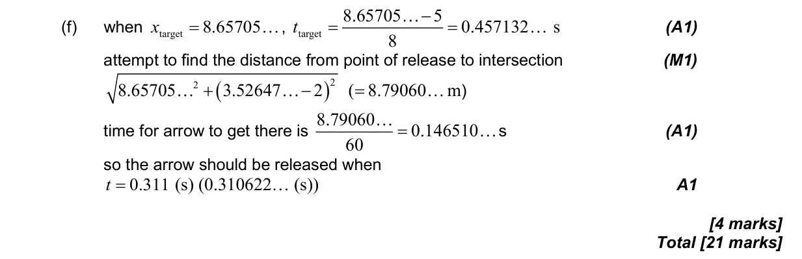

3.12 Vector kinematics2.4 Key features of graphs2.1 Equations of straight lines, parallel and perpendicular
Question

Markscheme



21 marks - May P2 TZ2 - Mathematics: Applications and Interpretation HL



